as Interpretable and Generalizable Policies

Recently, deep reinforcement learning (DRL) methods have achieved impressive performance on tasks in a variety of domains. However, neural network policies produced with DRL methods are not human-interpretable and often have difficulty generalizing to novel scenarios. To address these issues, prior works explore learning structured, programmatic policies. Yet, these works employ limited policy representations or require stronger supervision. Our framework instead learns to synthesize programs solely from reward signals.
Overview
To address the interpretability and generalization issues of deep reinforcement learning (DRL) methods,
we propose synthesizing programs from reward.
These programs are human-readable, flexible, and expressive. However, programs are difficult to synthesize purely from environment reward.
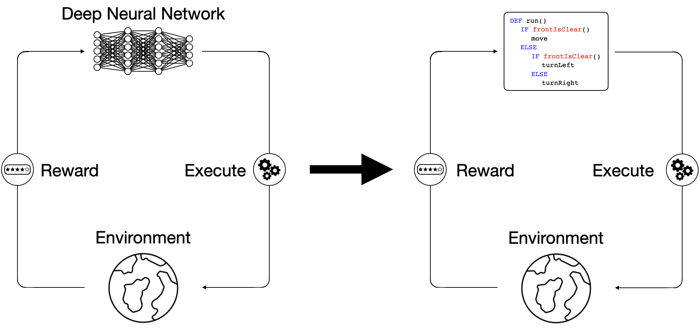
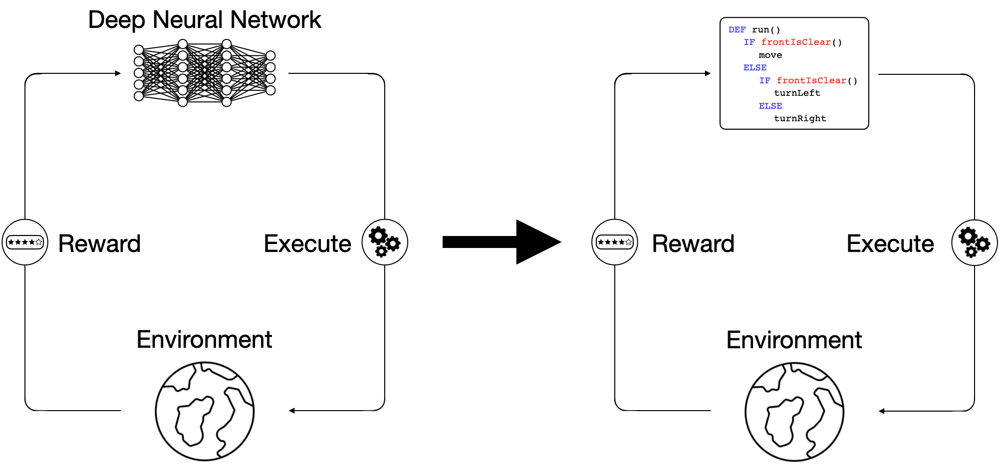
Due to the difficulty of directly synthesizing discrete program tokens only from task reward,
we break down the problem into two stages:
- Learning program embedding stage: we propose to learn a program embedding space by training a program encoder `q_\phi` that encodes a program as a latent program `z`, a program decoder pθ that decodes the latent program `z` back to a reconstructed program `\hat{p}`, and a policy `\pi` that conditions on the latent program `z` and acts as a neural program executor to produce the execution trace of the latent program `z`. The model optimizes a combination of a program reconstruction loss `\mathcal{L}^\text{P}`, a program behavior reconstruction loss `\mathcal{L}^\text{R}`, and a latent behavior reconstruction loss `\mathcal{L}^\text{L}`. `a_1, a_2, ..., a_t` denotes actions produced by either the policy `\pi` or program execution.
- Latent program search stage: we use the Cross Entropy Method to iteratively search for the best candidate latent programs that can be decoded and executed to maximize the reward to solve given tasks.
StairClimber |
FourCorner |
TopOff |
Maze |
CleanHouse
|
Harvester |
We evaluate our approach on a set of sparse-reward Karel environments---commonly used in the program synthesis domain---specially designed to evaluate the performance differences between our program policies and DRL baselines.
How well does LEAPS solve the Karel tasks?
DRL |
LEAPS |
||
|---|---|---|---|
|
StairClimber
|
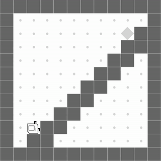 | 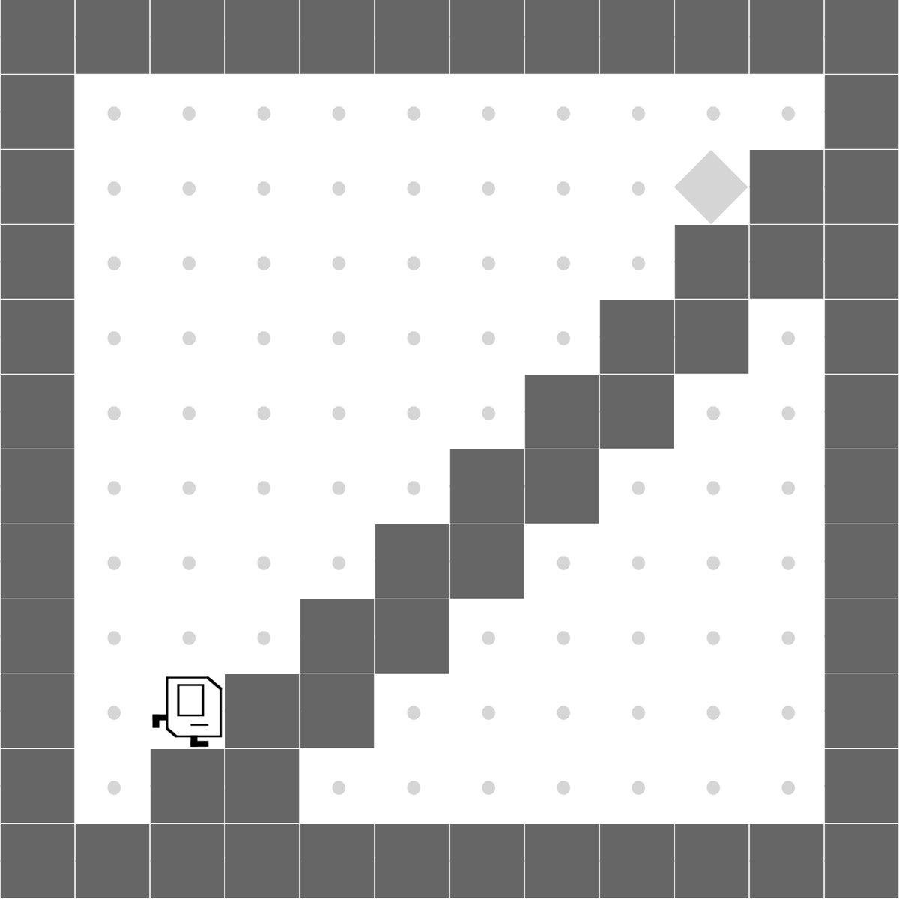 | Both methods learn to successfully climb the stairs. |
|
FourCorner
|
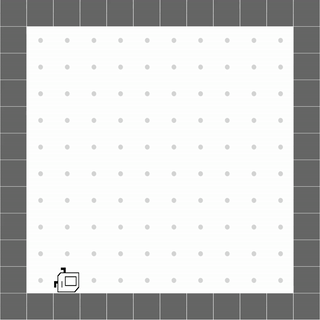 | 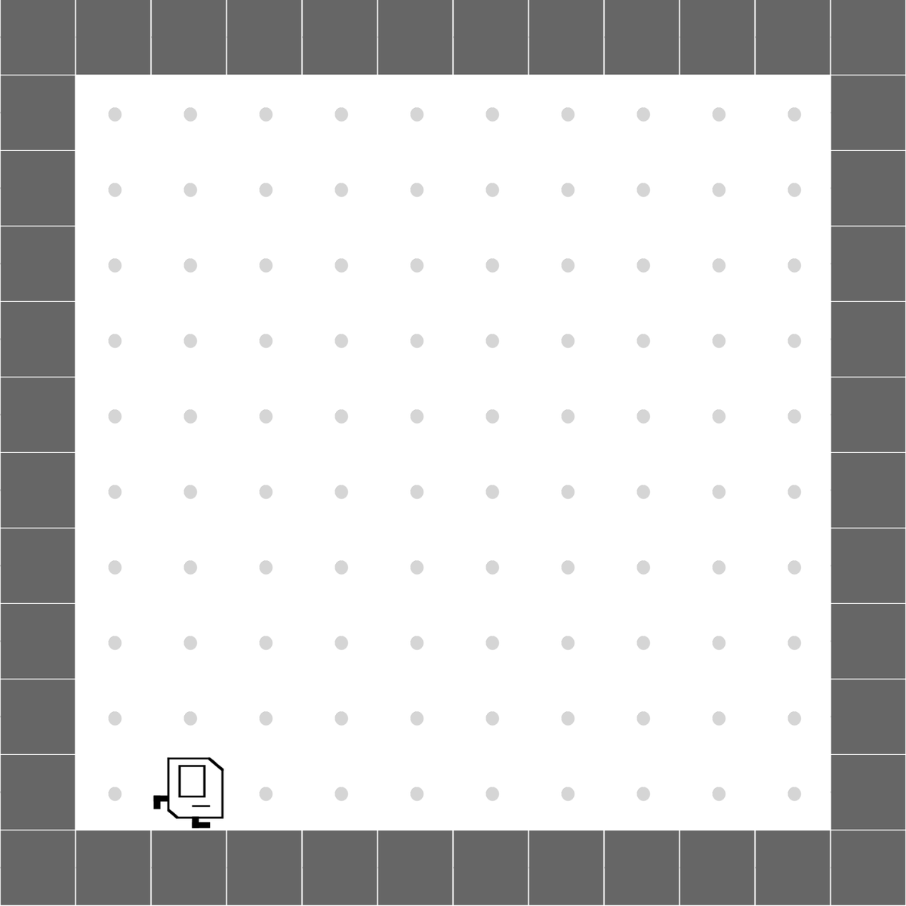 | DRL only manages to place one marker while LEAPS places one in each corner. |
|
TopOff
|
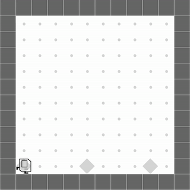 | 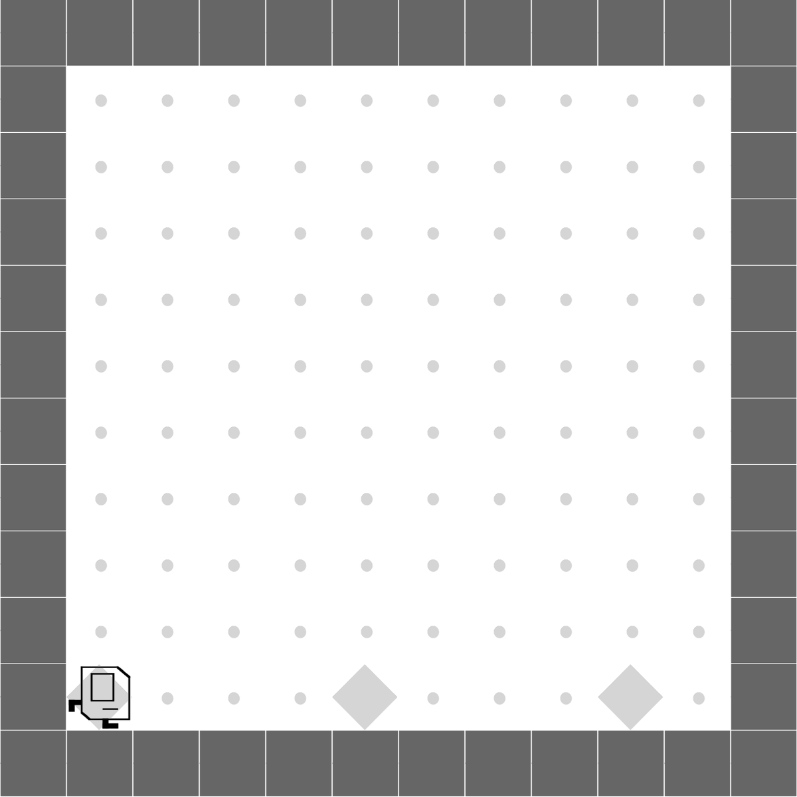 | DRL only tops off one marker while LEAPS tops off every marker successfully. |
|
Maze
|
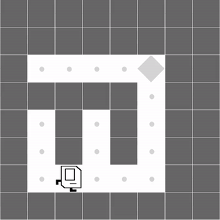 | Both methods learn to successfully navigate the maze. | |
|
CleanHouse
|
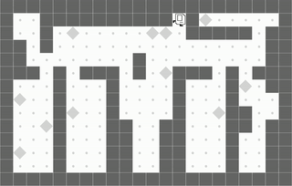 | 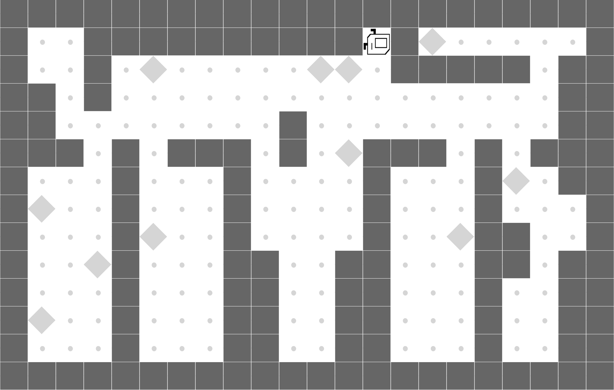 | LEAPS is able to clean one room, while DRL doesn't learn meaningful behaviors. |
Harvester
|
 |
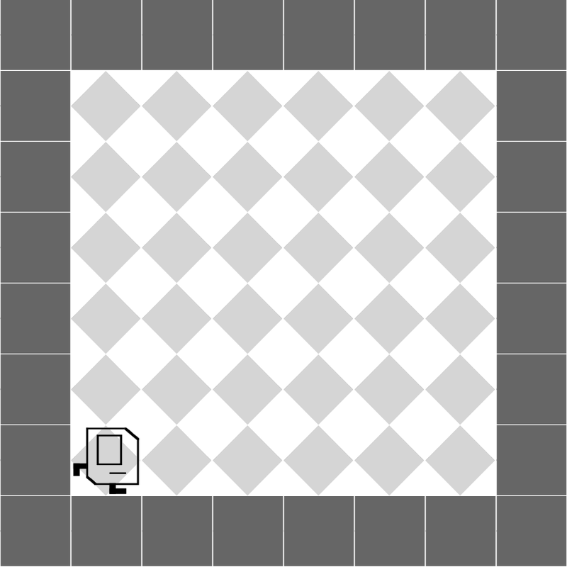 | Both partially harvest the markers. |
LEAPS performs well quantitatively, too. It performs the best on 5 out of 6 tasks when compared to a wide array of
DRL and program synthesis baselines:
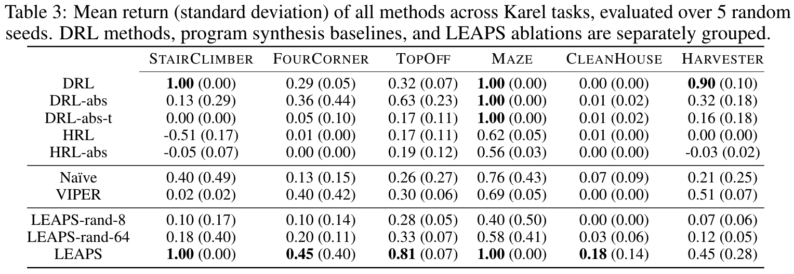
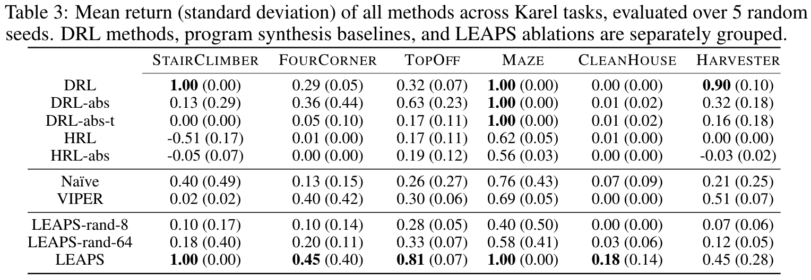
How much better does LEAPS generalize?
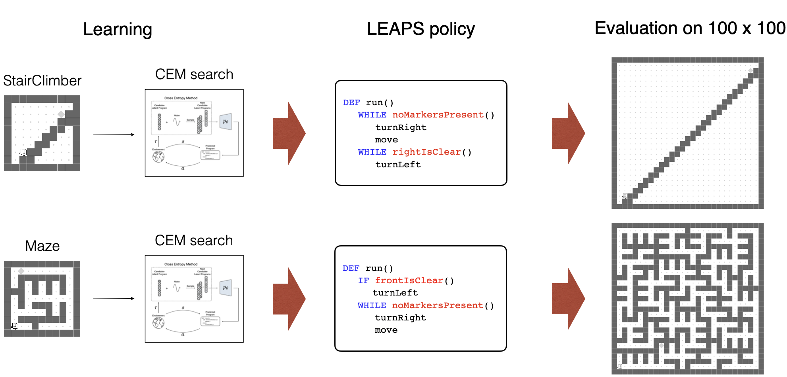
We test zero-shot generalization by training policies on the original, small grids and transferring them
to much larger 100x100 instances.
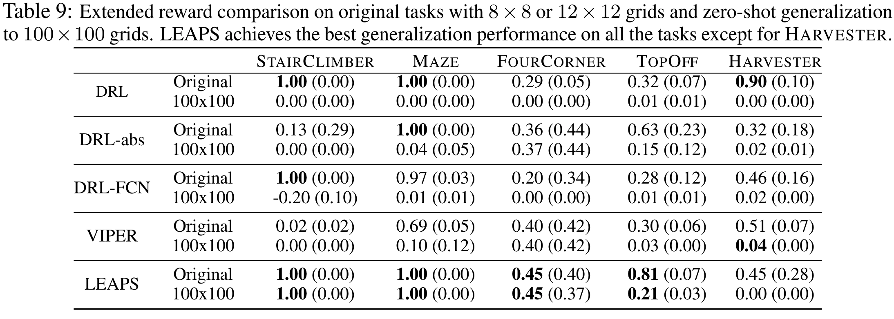
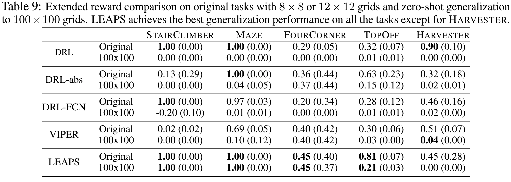
Are LEAPS policies interpretable?
| 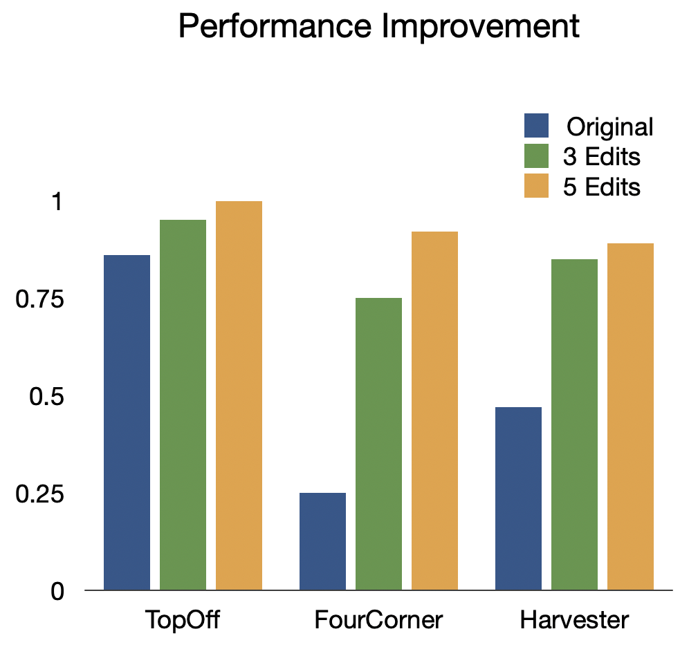 |
Synthesized programs are not only readable to human users but also interactable, allowing non-expert users with a basic understanding of programming to diagnose and make edits to improve their performance. To test this hypothesis, we asked people with programming experience who are unfamiliar with our DSL or Karel tasks to edit suboptimal LEAPS programs to improve performance as much as possible.
We see a significant increase in performance in all three tasks, with an average 97.1% increase in performance with just 3 edits and an average 125% increase in performance with 5.
How does CEM search?
Here, we demonstrate the effectiveness of CEM as our program search algorithm by visualizing its search trajectory over our latent program embedding space for the StairClimber task. As you can see, over time, CEM search converges towards the ground-truth program, marked with a red star. Note that it appears to pass through the ground truth program halfway through the search; this is due to visual distortions introduced by projecting a 256-dim space to a 2D one.
|